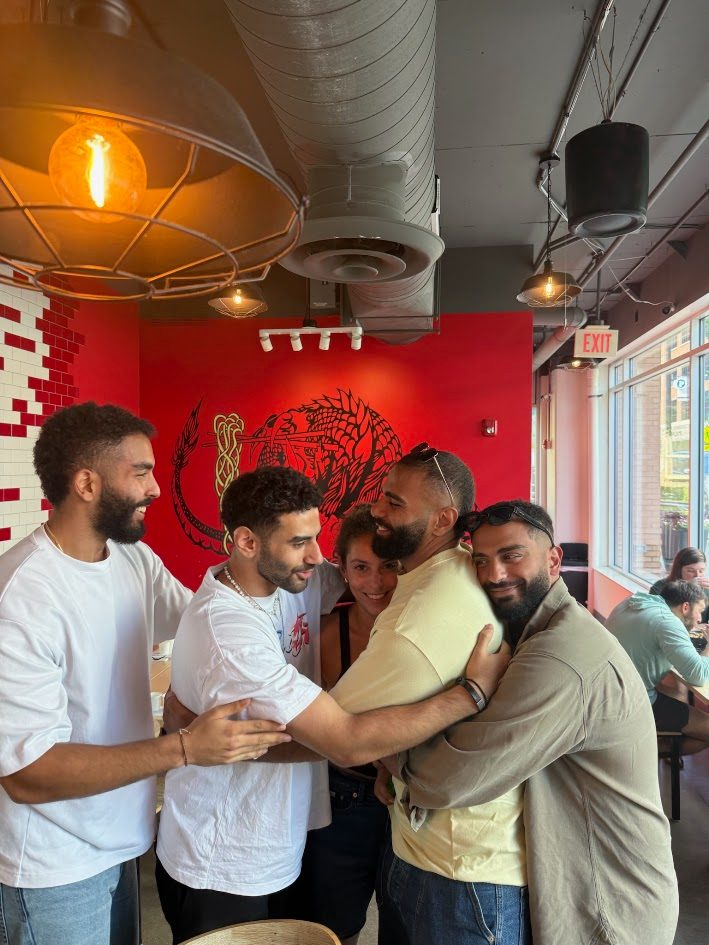

Two cars meet in the Pennsylvania mountains on Friday. We hike, we eat, and everyone is in Columbus by 11 AM Sunday.

Drive times are estimates. Check traffic that morning.
Ohiopyle forecast, checked Nov 16.
Sunday: both cars leave Wheeling at 8:30 AM and reach Columbus around 11 AM.
Sunset is about 4:55 PM, so the hiking happens early.
Stars are Google Maps ratings, checked Nov 16, 2026.
Small local places. Stars are from Google Maps.
The cottage and the Fallingwater tour come first. Do them today.
Sleeps 5 in bunks. Heat and lights, but no kitchen or bathroom. Bring bedding, towels and dishes. A yurt is the backup.
$39 to $69, plus $6.50 fee
Reserve at PA ParksOr call 888-727-2757. Park lodging page
Book one time slot for all five. Tickets are non-refundable.
$42 each, plus 6% fee
Get ticketsOr call 724-329-8501.
Ask for a room or cabin for five. The light show is about $30 per car, paid at the gate.
Check the site for rates
See Oglebay staysOr call 304-243-4000.
If the cottages are full: rent a private cabin near Ohiopyle or Farmington, PA. The plan stays the same.
Warm days, cold nights. Your checkmarks stay on your own phone.